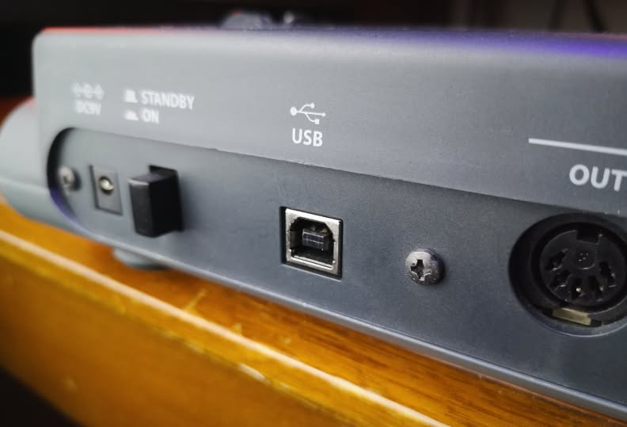
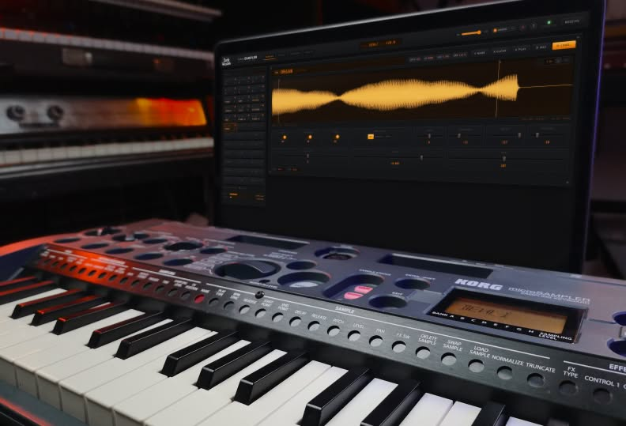
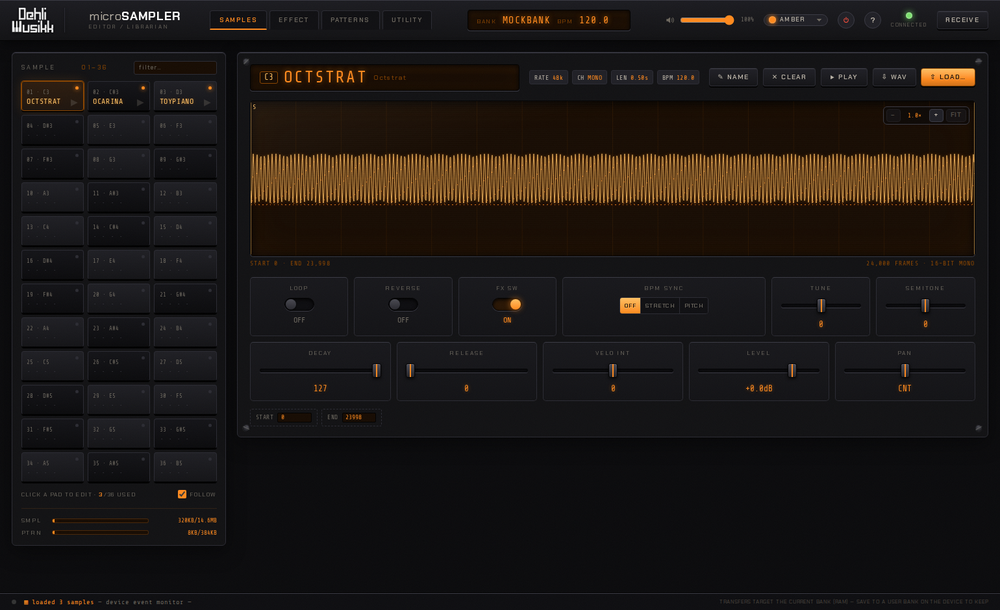
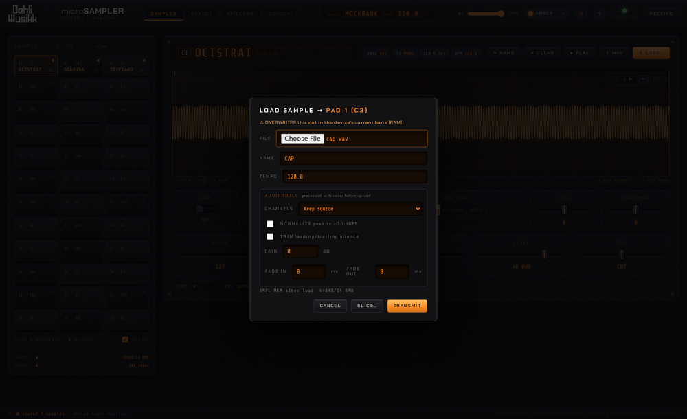
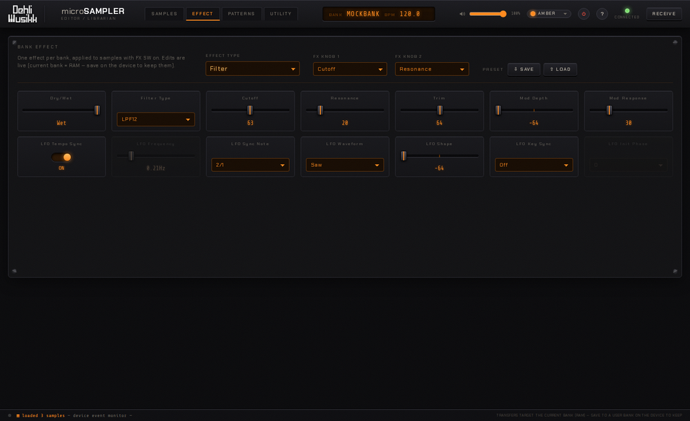
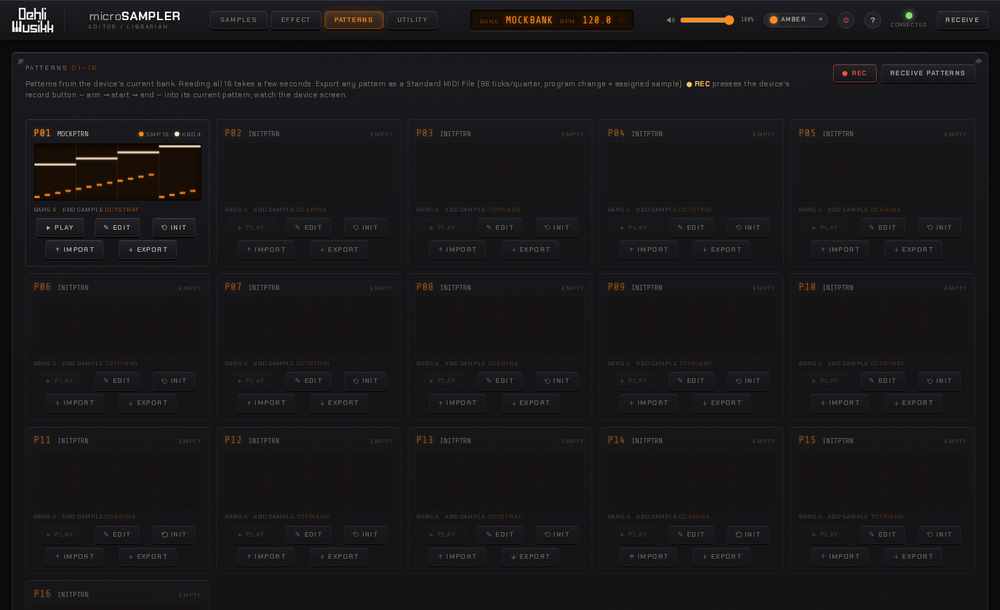
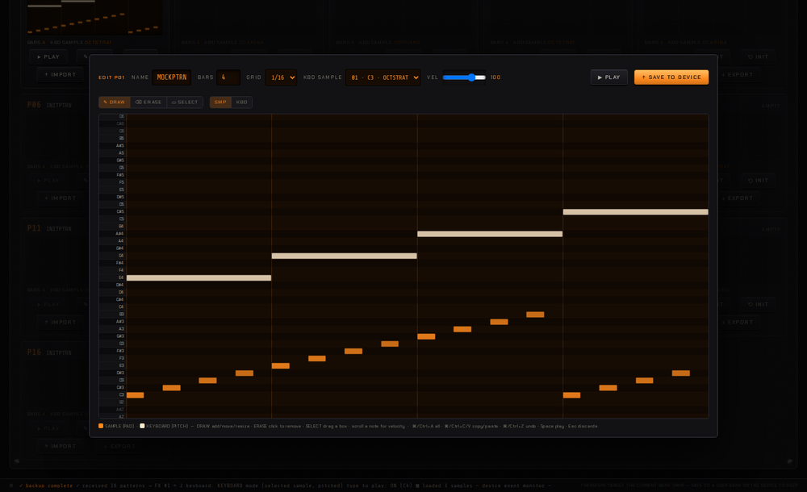
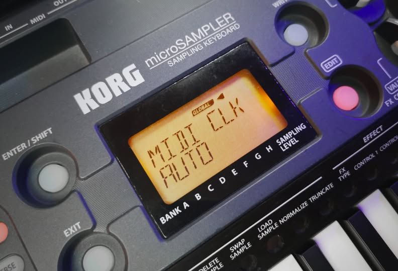
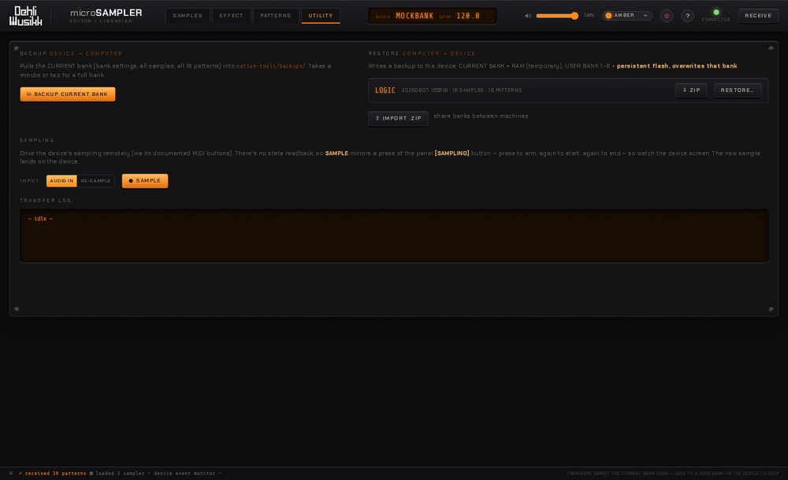
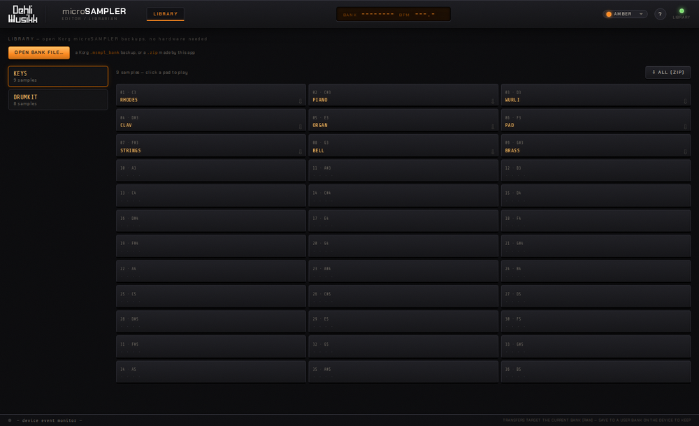

microSAMPLER Editor / Librarian
A modern editor & librarian for the Korg microSAMPLER — sample editing, effects, patterns and full bank backup, from your computer.
Overview
The microSAMPLER Editor / Librarian brings the Korg microSAMPLER's editing and librarian features to a modern computer — replacing Korg's original application, which was 32-bit and no longer runs on current macOS. It talks to the hardware over USB and gives you a full graphical editor in your browser.
What you can do:
- Samples — download/upload WAVs, edit every parameter, trim, audition on the device, and manage all 36 slots.
- Effect — edit all 22 effect types with their complete parameter sets.
- Patterns — receive, play and record patterns on the device, and import/export them as MIDI files.
- Librarian — back up and restore entire banks (including the device's persistent user banks).
This is an independent project, not affiliated with, endorsed or supported by Korg. It contains no Korg software or firmware. microSAMPLER and Korg are trademarks of Korg Inc., used only to identify the hardware this software works with.
Requirements
Hardware
- A Korg microSAMPLER.
- A USB cable (USB-B, the standard "printer" type) to connect it to your computer.

Software
| Component | Notes |
|---|---|
| Operating system | macOS (tested), Linux (should work), Windows (untested) |
| Python 3.8+ | macOS: via the Xcode Command Line Tools (xcode-select --install) or python.org — the only thing you install |
pyusb (BSD) + libusb (LGPL) | Bundled with the app — no pip or Homebrew step (a system copy is used instead if you have one) |
| A modern browser | Chrome / Chromium recommended |
The editor itself needs no installation and no build step — it's plain web files served by a small local helper (the "bridge").
Installation
Get the project from GitHub — either download the release ZIP or clone the repository.
Unzip it, then open a terminal in the unzipped folder. You can also browse all releases. Prefer git? Clone the repository instead:
git clone https://github.com/benjamindehli/microsampler-editor-librarian.git
cd microsampler-editor-librarianmacOS — the easy way
Nothing to install — pyusb and libusb are bundled. Just use the launcher:
- Connect the microSAMPLER to your Mac with the USB cable and power it on.
- Open the
macOS/folder and double-clickmicroSAMPLER Editor Librarian.command. - Enter your password when asked — administrator rights are required to claim the USB connection from macOS.
- The editor opens in your browser automatically.
The launcher is unsigned (it's a free, open-source project), so the first time you open it macOS blocks it with "cannot be opened because it is from an unidentified developer". Approve it once:
- Right-click (or Control-click) the launcher → Open, then Open again in the dialog.
- On newer macOS, if there's no Open option: double-click it once (it gets blocked), then go to System Settings → Privacy & Security, find the message about the blocked launcher, and click Open Anyway.
Comfortable with Terminal? Clear the download quarantine on the whole folder instead, then double-click as normal:
xattr -dr com.apple.quarantine "microsampler-editor-librarian-v1.10.0"You only need to do this once.
Linux
pyusb and libusb are bundled (x86-64 and ARM64) — just use the launcher:
- Connect the microSAMPLER and power it on.
- Open the
Linux/folder and double-clickmicroSAMPLER Editor Librarian.sh. Some file managers open.shfiles in an editor — mark it executable / "Allow launching" first, or run./'Linux/microSAMPLER Editor Librarian.sh'from a terminal. - Enter your password when asked (root is needed to claim the USB device).
- The editor opens in your browser automatically.
Windows (experimental)
Windows hasn't been verified, and libusb can't open the device until its USB driver is switched to WinUSB using Zadig.
- Install Python 3 (tick "Add to PATH"). pyusb and a
64-bit
libusbDLL are bundled — nothing else to install. - With the microSAMPLER connected, run Zadig and replace its driver with WinUSB (or libusbK).
- Open the
Windows/folder and double-clickmicroSAMPLER Editor Librarian.bat.
Any platform — manual
sudo python3 native-tools/bridge.pyThen open http://localhost:8765 in your browser.
The operating system's MIDI driver owns the device's USB interface; the bridge needs elevated rights to take it over while it runs. It hands control back when it exits.
Try it without hardware
To explore the interface with no device connected, run the bridge in mock mode:
python3 native-tools/bridge.py --mockFirst run
- With the device connected and the bridge running, open the editor in your browser.
- Check the CONNECTED light (top-right) is green.
- Press RECEIVE (top-right) to read the current bank from the device — its 36 sample slots and settings appear.
- Click any pad to start editing.

Samples

- 36-slot pad grid — click a pad to edit it; filter by name with the search box.
- Waveform — scroll to zoom, drag to pan. Set the start/end points by dragging the S/E markers or by typing exact frame values. With ZERO-SNAP on, a dragged marker snaps to the nearest zero crossing so the trim doesn't click.
- Audition — the ▶ PLAY button plays the slot on the device (with a moving playhead over the waveform).
- Original BPM — click the BPM chip to edit the sample's original tempo (used for BPM-sync stretching) in a dialog. Applying re-uploads the sample to the device, keeping its audio and all other settings.
- On-screen keyboard — a piano below the editor mirrors all 36 pads; click a key to play it on the device. The SAMPLE / KEYBOARD toggle switches how the keys play: SAMPLE triggers a different sample per key (keys with no sample are dimmed), and KEYBOARD plays the currently selected sample across the keyboard, pitched. Tick ⌨ TYPE TO PLAY to play from your computer keyboard too (the piano shows which key is which), with Z/X or the ◀ ▶ buttons to shift octave. Tick MIDI IN to play the device from a connected MIDI keyboard, with velocity, pitch bend and sustain pedal (it uses your browser's Web MIDI and honors the same SAMPLE / KEYBOARD mode; available in Chrome, Edge and Firefox).
- Transfer — download a slot as a WAV, or upload WAVs (auto-resampled to the device's 48/24/12/6 kHz). Drop several WAVs onto the pads to fill consecutive slots.
- Auto-slice — from the upload dialog's SLICE… button, chop one long sample across consecutive pads, either into equal pieces or at detected transients (ideal for drum breaks and loops).
- Audio tools on upload — normalize, adjust gain, trim silence, fade in/out, and convert mono↔stereo, all processed in your browser before transfer.
- Live editing — loop, reverse, BPM-sync, FX on/off, decay, release, level, pan, semitone, tune and velocity intensity, all written to the device as you change them.
- Slot management — rename, clear (✕), and copy/swap by dragging one pad onto another.
- Memory meters — all samples are downloaded when you connect (a progress bar shows the count), so the readout is always exact and every waveform is instant.
- FOLLOW (toggle, on by default) — the app's selection tracks the last sample triggered on the device, whether you play it by hand or a pattern triggers it, so editing keeps up with the hardware. Since samples are preloaded, the switch is instant; turn it off if you'd rather the selection stay put while a pattern plays.

Effect

- All 22 effect types, each with its complete set of parameters.
- Hover any parameter to see its range and default value.
- Two assignable knobs — and moving the matching knobs on the hardware is tracked live in the editor.
- Parameters gray out and swap exactly like the hardware does, depending on the current settings.
- Presets — save the whole effect (type, knobs, parameters) to a file and load it back.
Patterns

- RECEIVE PATTERNS reads all 16 patterns from the current bank.
- Play a pattern on the device (the ▶ on each recorded card), with a playhead sweeping its mini piano-roll.
- ✎ EDIT opens an in-app piano-roll editor over both the sample-mode (pad) and keyboard-mode (pitched) tracks. Switch between the Draw, Erase and Select tools (the cursor changes to match): draw, move and resize notes, drag to erase a run of them, or marquee-select several at once. It supports multi-select (Shift/⌘-click), undo/redo and copy/paste whose clipboard persists across patterns, so you can copy from one pattern and paste into another. Per-note velocity shows as note brightness, the arrow keys nudge or resize, and Space plays the pattern on the device with a playhead sweeping the roll. Set the bar count, grid snap and the keyboard track's sample, then Save to Device (clicking outside the dialog saves and closes). Works on an empty slot too, so you can build a pattern from scratch.
- ● REC presses the device's record button over MIDI — arm → start → end — to record into its current pattern.
- Import / export MIDI — export any pattern as a Standard MIDI File, or import one.

The device must have GLOBAL → MIDI CLK = AUTO (or EXT MIDI) so its sequencer follows the editor. Record is fire-and-forget — watch the device screen as it steps through arm → record → end.

Utility

- Bank backup & restore — save the current bank to your computer and restore it later, to the current (RAM) bank or to one of the device's persistent user banks. Backups can be exported/imported as ZIP files.
- Cherry-pick restore — from a backup's SAMPLES… button, copy a single sample into any pad of the current bank, without restoring the whole bank.
- Remote sampling — choose the input source (AUDIO IN / RE-SAMPLE) and press SAMPLE to drive the device's sampling over MIDI. It mirrors the panel button (arm → sample → end); watch the device screen.
Library mode (no hardware)

You don't need a microSAMPLER to browse and extract the contents of bank backups — useful for recovering audio and patterns from old backups saved by Korg's original editor. Start the bridge in library mode:
python3 native-tools/bridge.py --libraryIt serves on http://localhost:8766 — a separate port from
the device bridge's 8765, so the two never clash. Or just double-click the
microSAMPLER Library launcher in your platform's folder
(macOS/, Linux/, Windows/) — no password is needed,
since library mode never touches USB.
- Open a bank file — in the LIBRARY view, OPEN
BANK FILE… imports a Korg
.msmpl_bankbackup or a.zipbackup made by this app. - Browse & play — each imported bank shows its 36 pads; click a pad to play that sample in the browser.
- Export samples — download any sample as a WAV, or grab the whole bank as a ZIP of WAVs. Device-only features are hidden while in library mode.
- Export patterns — any recorded patterns appear below the pads; download
each as a MIDI file, or all of them as a
.midZIP, ready to drop into your DAW.
Prefer the command line? python3 native-tools/msmpl_bank.py extract "bank.msmpl_bank"
writes all the samples to WAVs (and any patterns to .bin blobs) without opening the app.
Top bar & shortcuts
- Bank name & BPM — click the bank display to edit them.
- Master volume — the slider sets the device's overall output level.
- Panic (⏻) — all-sound-off / stop, if a note ever sticks.
- Theme — 12 accent colours from a swatch dropdown; the whole interface recolours.
- RECEIVE — re-read the bank from the device.
- ? — the in-app help overlay.
| Shortcut | Action |
|---|---|
| ← → ↑ ↓ | Move between pads |
| Space | Audition the selected pad |
| + / − / 0 | Waveform zoom in / out / fit |
| R | Receive bank from device |
| Ctrl/⌘ + Z | Undo a parameter edit |
| Ctrl/⌘ + ⇧ + Z | Redo |
| Z / X | On-screen keyboard: octave down / up (when “type to play” is on) |
| Space | Pattern editor: play / stop the pattern on the device |
| Del | Pattern editor: delete the selected note(s) |
| Ctrl/⌘ + A / C / V | Pattern editor: select all / copy / paste notes |
| ? | Help overlay |
Tips & gotchas
Edits and uploads go to the device's current bank, which is RAM — they're lost on power-off or bank-switch. To keep them: do a WRITE on the device, or restore to a user bank from the editor. Back up your bank (UTILITY → BACKUP) before bulk operations, and never disconnect mid-transfer.
- One USB owner at a time — close other MIDI applications (and Korg's editor) while the bridge is running; only one program can hold the device.
- Pattern playback needs
GLOBAL → MIDI CLK = AUTOon the device. - Remote sampling & record give no feedback in the editor — watch the device screen.
Troubleshooting
| Symptom | Fix |
|---|---|
| "microSAMPLER not responding" / "no inquiry reply" | The app shows a panel with a Retry button: power-cycle the device (off, then on) and click Retry — no need to restart the bridge. The bridge also retries (incl. a USB reset) on its own first. |
| "BRIDGE OFFLINE" | The local bridge isn't running — start it with the launcher (or
sudo python3 native-tools/bridge.py); the page reconnects by itself. |
| macOS won't open the launcher ("unidentified developer") | It's unsigned — approve it once: right-click (Control-click) → Open → Open. On newer macOS without that option, double-click once, then System Settings → Privacy & Security → Open Anyway. See Installation for the Terminal alternative. |
| Device not found / permission error | Run with administrator rights (the launcher does this), check the cable, and close any other MIDI app holding the device. On Windows, switch the driver to WinUSB with Zadig. |
| Edits made on the device don't show in the app | The microSAMPLER only transmits panel edits while it's on its sample-edit page. Press RECEIVE (or just refocus the window) to re-read the bank. |
| Pattern play does nothing | Set GLOBAL → MIDI CLK = AUTO (or EXT MIDI) on the device. |
| Uploaded sample sounds wrong | The device plays 16-bit audio at fixed rates; the editor resamples automatically — re-upload if you changed the source file. |
| USB seems stuck after many reconnects | Power-cycle the microSAMPLER — heavy connect/disconnect churn can wedge its USB firmware, which only a power-cycle fully resets. |
About & license
Made by Benjamin Dehli / Dehli Musikk. The communication protocol was independently reverse-engineered for the sole purpose of interoperability with hardware owned by the user.
Licensed under the GNU GPL v3. Source is on GitHub; the releases page has every version with its changelog.
This software is provided "as is", without warranty of any kind. The author accepts no responsibility for any damage to your device or loss of samples, patterns or other data. It writes to the device's memory — back up your banks before bulk operations.